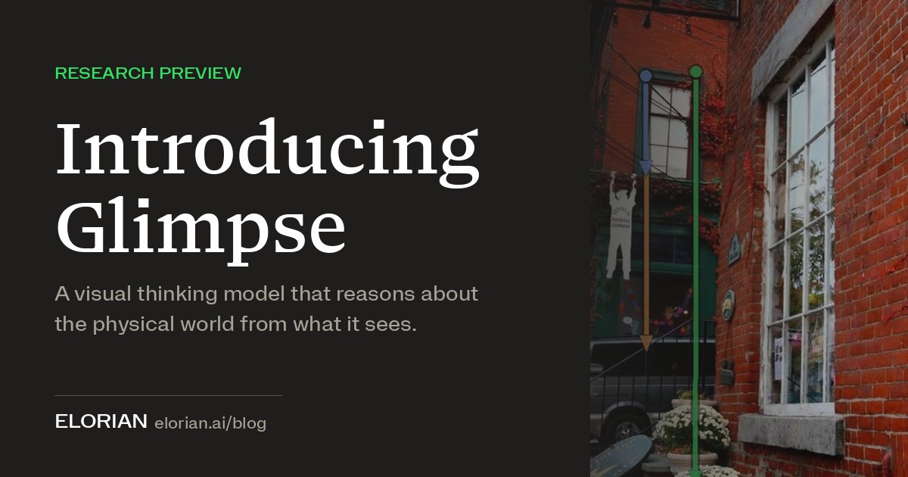

科技產品 T1

官方研究預覽圖，非本站實測或機器人實際控制成果。 Elorian
Elorian 開放 Glimpse 研究預覽，以視覺推理處理物件追蹤與空間問題
發佈時間
Elorian／Glimpse
Glimpse 嘗試在推理過程反覆查看影像，追蹤移動物件、切換觀點，並處理影片中的動作與因果關係；目前是研究預覽。
- 官方提供 API 與聊天介面，並示範多模態工具及子代理協作。
- 原廠展示圖表、計數與影片理解測試；能力及成本比較是公司自述，並非本站獨立測試。
- 精確場景重建及機器人直接控制仍是研發方向，不應把影片理解等同可安全自主操作。
完整報告收合報告
事件背景與影響
多模態模型需要的不只是辨識物品，還包括追蹤位置與檢查證據；這類能力可用於影片整理、科學影像與機器人資料標註。
事件與發佈依據
官方 Introducing Glimpse 當日公告提供 API 與互動聊天介面，僅有日期，不補造時分。
收錄紀錄
以 Elorian.*Glimpse、Glimpse.*Elorian 查 10/04–10/17 十四份日報無命中，再核對同窗產品表，未收錄本次預覽。
尚待確認
研究展示不能保證真實部署可靠度；官方稱介面已開放，實際帳號資格、負載與供應仍以平台為準。
相關實體與概念
Elorian、Glimpse、多模態、視覺推理、物件追蹤、機器人資料
科技產品 T2
RG DDS 官方預購圖，非任天堂 3DS，非本站實測。 Anbernic
Anbernic RG DDS 開放預購，雙螢幕 Android 掌機預定十二月起出貨
發佈時間
Anbernic／RG DDS
RG DDS 採上下雙 IPS 螢幕、Snapdragon G2 Gen 2 與 Android 16，基本款官方預購價 US$284.99，標示原價 US$299.99。
- 上螢幕 4.7 吋、1200×720；下螢幕 4 吋、960×720。
- 提供 8GB／128GB 與 12GB／256GB 配置，支援記憶卡擴充，內建可收納觸控筆。
- 官方預定 2026/12/10 起逐步出貨；不是已交貨，也不是具裸眼 3D 的任天堂主機。
完整報告收合報告
事件背景與影響
雙螢幕設計讓 Android 遊戲及不同操作布局有更多選擇，但預購付款到收貨仍有等待期，遊戲相容性不能只看晶片推定。
事件與發佈依據
10/16 報導確認已接受預購，並核對官方商品頁；不以 10/17 Engadget 文章或更新日期代替事件日期。
收錄紀錄
Anbernic.*RG.?DDS、RG.?DDS.*Anbernic、RG DDS 查十四份日報無命中，並已核對同窗產品表。預購與售價正式可用為本次事件。
尚待確認
價格可能隨配置、運費及稅額變動；出貨是預計時程。效能、續航與各遊戲相容性未經本站實測。
相關實體與概念
Anbernic、RG DDS、Android 16、雙螢幕、Snapdragon、預購
全球焦點 1
續報｜川普暫緩新一輪對俄制裁與關稅，澤倫斯基批評削弱施壓
發佈時間
美國暫緩依新法對俄能源交易等施加的部分措施，烏克蘭總統認為此舉將讓俄方獲益。
- 命令涉及俄國商品關稅及購買其油氣的懲罰措施。
- 澤倫斯基週六公開反對，擔憂後續進一步放寬。
- 暫緩部分新措施不等於解除所有既有制裁。
完整報告收合報告
事件背景與影響
決定直接牽動對俄經濟壓力與盟友協調，亦反映能源價格與戰時支援間的政策拉扯。
事件與發佈依據
Reuters 10/17 23:30 IST 報導前夜行政命令及週六回應，均在全球視窗內。
收錄紀錄
前次 10/10 為柴油供應安排；本次新增正式暫緩原訂下週生效的制裁與關稅，不把舊談話當新命令。
尚待確認
經濟與戰場效果尚未確定；烏方對後續政策的判斷不是已發生的進一步解除。
相關實體與概念
美國、俄羅斯、烏克蘭、Graham Act、能源、制裁
全球焦點 2
續報｜法國生活成本與學生抗議合流，全國遊行伴隨衝突及逮捕
發佈時間
法國各地出現大規模抗議，生活成本訴求與教育資源不滿結合，部分城市發生縱火與搶掠。
- 官方估計約 55 萬人，主辦方估約 80 萬，統計口徑不同。
- 內政部稱全國約 400 人被捕。
- 暴力情況不能代表所有參與者；個案責任仍待調查。
完整報告收合報告
事件背景與影響
學生議題擴大為跨群體社會壓力，政府面臨公共服務、民生與維安的共同考驗。
事件與發佈依據
AP 首發 10/17 09:18:36 UTC，選取週六新一輪全國遊行；人數依截點前最新版本。
收錄紀錄
前次 10/14 為學生遊行與聲援；新增 10/17 跨群體動員、全國人數與當日衝突。
尚待確認
主辦方與官方人數有差距，傷亡及逮捕數仍可能調整。
相關實體與概念
法國、學生、工會、生活成本、教育資源、公共秩序
全球焦點 3
印度加爾各答杜爾迦節人潮事故至少十七死，雨勢與狹窄通道受關注
發佈時間
北加爾各答節慶會場週六晚間發生人潮擠壓，至少十七人死亡，多人送醫。
- 報導引述警方與醫院資訊，至少十五人受傷。
- 目擊者提到雨勢、黑暗與狹窄通道；官員亦提及廣播後人群移動。
- 印度總理宣布對罹難者家屬提供援助。
完整報告收合報告
事件背景與影響
大型宗教活動的人流、出入口與雨天應變攸關公共安全，應區分目擊描述與正式事故調查。
事件與發佈依據
NDTV 首發 10/17 22:47 IST；警方稱事故約當地 19:40，均在視窗內。
收錄紀錄
十四份日報未收錄此次加爾各答節慶事故，不與其他城市過往踩踏混用。
尚待確認
傷亡為暫定；通道、照明、廣播及可能結構損壞的因果順序尚待調查，不先歸責單一因素。
相關實體與概念
印度、加爾各答、杜爾迦節、人流管理、公共安全
全球焦點 4
突尼西亞工會與反對派共同示威，要求自由與改善民生
發佈時間
數千人在首都響應 UGTT 等團體動員，抗議政治限制與經濟困境，反對派出現少見合作。
- 遊行經過 Habib Bourguiba 大道。
- 參與者要求釋放批評政府者，並關注就業及公共服務。
- 賽義德否認獨裁指控，認為對手利用危機製造動盪。
完整報告收合報告
事件背景與影響
工會與不同政治力量共同上街，可能改變長期分散的反對聲音，但不等於政權已發生變動。
事件與發佈依據
Reuters 10/17 17:00 IST 報導週六突尼斯現場遊行。
收錄紀錄
近十四日日報沒有此次 10/17 跨群體遊行；不以八月缺水抗議當今日現場。
尚待確認
缺乏統一精確人數；各方對政治責任的說法不能視為已獲司法認定。
相關實體與概念
突尼西亞、UGTT、賽義德、工會、公民自由、民生
全球焦點 5
葉門沙那釋放一百五十九名被拘留者，ICRC 協助健康評估與返家
發佈時間
沙那當局單方面釋放一百五十九名近期因葉門衝突被拘留的人，紅十字國際委員會協助返家安排。
- ICRC 事先逐一訪談、通知家屬並檢查健康與旅行適宜性。
- 本次不屬斯德哥爾摩協議安排。
- ICRC 未決定誰獲釋或釋放人數。
完整報告收合報告
事件背景與影響
實際恢復人身自由及家屬聯繫是具體人道進展，但不能據此推論整體和平談判達成協議。
事件與發佈依據
ICRC 正文明記 10/17 當日釋放；保留日期，不以網頁較早建檔 metadata 當事件時刻。
收錄紀錄
未見十四份日報收錄此批釋放；不是 10/17 日報的亞丁機場襲擊。
尚待確認
網址尾碼為 154，但正文及標題均為 159，本文採正文。未擴大宣稱所有衝突被拘留者均獲釋。
相關實體與概念
葉門、沙那、ICRC、被拘留者、人道法、家庭重聚
全球焦點 6
續報｜教宗良十四世肺部手術後出院返梵蒂岡，預定恢復週日祈禱
發佈時間
教宗週六離開羅馬 Gemelli 醫院返梵蒂岡，醫師依當日檢查認為可以出院。
- 星期二接受肺部手術後，週六完成血液與胸部影像檢查。
- 官方安排翌日從宗座宮窗口主持三鐘經。
- 出院前在醫院專用空間舉行彌撒。
完整報告收合報告
事件背景與影響
出院使教宗恢復部分公開職務，但短期活動安排與長期療程仍應區分。
事件與發佈依據
Vatican News 可見發布 10/17 15:44 CEST，報導當日下午實際返抵，非僅預告出院。
收錄紀錄
前次 10/14 確認手術及診斷；本次新增出院與恢復公開祈禱安排。
尚待確認
出院不等於病況完全解除；後續治療及行程仍依醫師與教廷公告。
相關實體與概念
梵蒂岡、良十四世、Gemelli、公共職務、三鐘經
全球焦點 7
IMF 年會警告衝突與能源風險，俄代表發言引發部分代表離席
發佈時間
IMFC 主席稱世界經濟仍具韌性，但戰爭、貿易與能源供應風險不能忽視；俄國官員發言時近半代表離席。
- 主席表示成員最後同意主席聲明。
- 聲明關注關鍵貿易通道、能源與糧食安全。
- 主席主張重建財政緩衝，同時保護弱勢及支持成長投資。
完整報告收合報告
事件背景與影響
經濟政策協作仍在推進，然而地緣衝突已直接進入多邊會議，增加取得共識的難度。
事件與發佈依據
Reuters 10/17 15:30 IST 報導曼谷週六 IMFC 會議與主席記者會。
收錄紀錄
選取週六主席聲明與會場事件，未以較早經濟預測或官員訪問代替新決議。
尚待確認
聲明不是各國已落實政策的證據，經濟韌性也不是排除下行風險。
相關實體與概念
IMF、IMFC、曼谷、多邊協作、能源安全、財政緩衝
全球焦點 8
續報｜阿爾巴尼亞抗議進入第五日，七名警員因執法爭議停職受查
發佈時間
地拉那反政府抗議持續，警方公布累計逮捕及警員受傷情形，並就執法越權指控啟動調查。
- 示威者與警方在總理辦公室附近再起衝突。
- 警方稱動盪期間逮捕 167 人、132 名警員受傷，並非全為週六單日。
- 七名警員停職等待調查，不等同已被認定有罪。
完整報告收合報告
事件背景與影響
抗議擴大與警察問責同時發展，將影響政府、學生及公共機關間的信任。
事件與發佈依據
AP 10/17 17:18:57 UTC；聚焦週六衝突及警方新公布的停職調查。
收錄紀錄
前次 10/16 為第三日衝突；新增第五日及七名警員停職，不用同一畫面補位。
尚待確認
人數為警方統計；個案執法責任與其他受傷情況仍待核實。
相關實體與概念
阿爾巴尼亞、地拉那、學生、Edi Rama、警察問責
全球焦點 9
南加州 Norte 野火持續，部分撤離解除但大多數命令仍有效
發佈時間
橙縣沿海山區野火已損害至少六棟住宅，約一萬六千人曾受撤離令影響，週六大多數命令仍有效。
- 火場位於 San Clemente 與 San Juan Capistrano 一帶。
- 週六報導的控制率約 5%，消防仍在處理熱點。
- 警方與消防要求居民勿進入仍封鎖區域。
完整報告收合報告
事件背景與影響
強風、乾燥及高溫讓沿海社區也承受迅速延燒風險，解除少數區域撤離不等於整個火場安全。
事件與發佈依據
AP 10/17 23:03:49 UTC，新增週六控制率及撤離狀態，非只重刊週五起火。
收錄紀錄
十四份日報未收錄此起 Norte Fire；與其他加州火場區分。
尚待確認
面積、控制率及撤離數會持續變動；本文不是即時疏散指示，應依當地官方命令。
相關實體與概念
加州、橙縣、Norte Fire、Santa Ana winds、撤離
全球焦點 10
柏林左翼黨、綠黨與社民黨完成探索協商，正式組閣談判仍待黨內批准
發佈時間
柏林三個政黨就推進組閣取得探索階段共識，將提請各自黨內機關批准展開正式談判。
- 左翼黨在九月選舉成為最大黨，原執政聯盟失去多數。
- 三黨先前對如何處理反猶太事件達成前置安排。
- 是否開始正式談判仍需黨內決定，不能稱新政府已就職。
完整報告收合報告
事件背景與影響
首都邦政府組成牽動住房與公共政策，但探索協商完成距正式聯盟、政策落實仍有程序。
事件與發佈依據
dpa／AFP 10/17 13:01 UTC 報導當日探索協商完成，後續頁面更新不改事件日期。
收錄紀錄
十四份日報未收錄此次三黨探索協商結果；不把九月選舉重新刊為今日新聞。
尚待確認
正式聯盟協議、人事與執行細節尚未確定；本文區分探索共識與政府成立。
相關實體與概念
德國、柏林、Die Linke、綠黨、SPD、組閣
研究備註
時間、來源與後續追蹤
研究截點 2026-10-18 08:01:26（Asia/Taipei）
研究時間與範圍
研究截點：2026-10-18 08:01:26（Asia/Taipei）。全球新聞：2026-10-17 08:01:26 至 2026-10-18 08:01:26（Asia/Taipei）。科技產品：2026-10-04 08:01:26 至 2026-10-18 08:01:26（Asia/Taipei）。